Masonry Data Gallery
Hover over images to reveal technical metadata. Click to open detailed split-pane lightboxes.
An expanded exploration of pure CSS featuring masonry grids, advanced hover metadata, split-pane lightboxes, and Ken Burns animations. Zero JavaScript.
Hover over images to reveal technical metadata. Click to open detailed split-pane lightboxes.
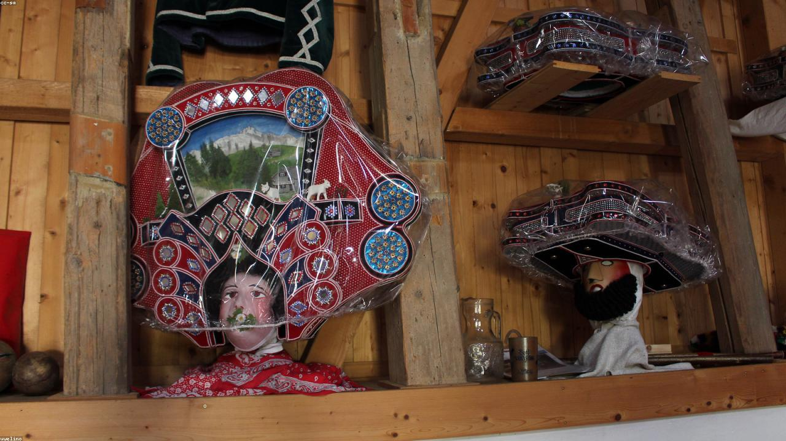
A breathtaking view of the sun cresting over the snow-capped peaks of the Swiss Alps, casting a golden glow over the valley below.
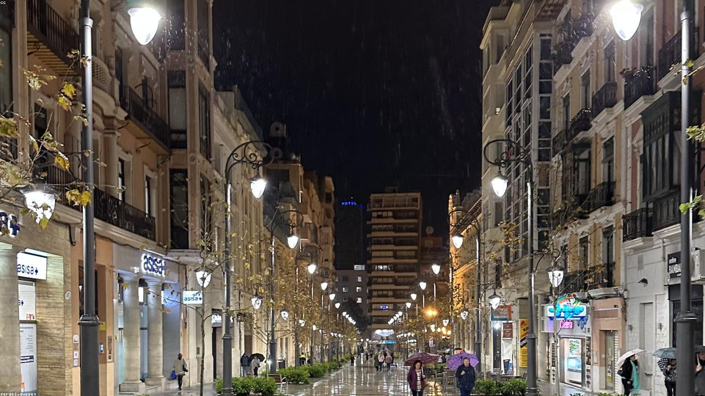
An ancient serpentine road cutting through the lush green hills of the Italian countryside, enveloped in the soft morning mist.
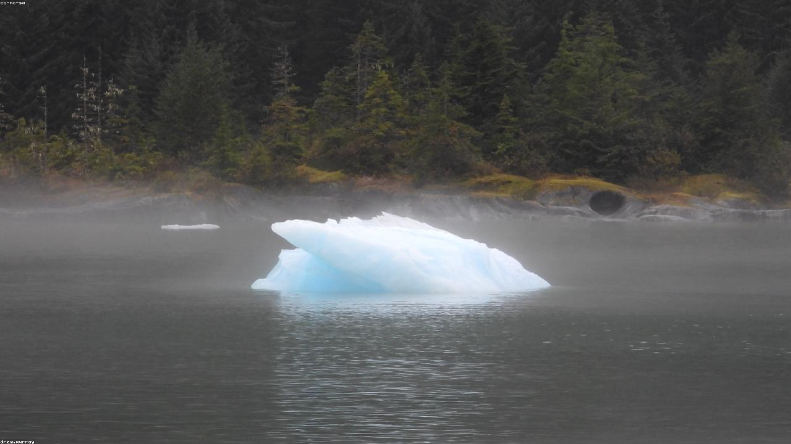
Looking up into the dense, vibrant canopy of the rainforest. Sunlight pierces through the leaves, creating an ethereal atmosphere.
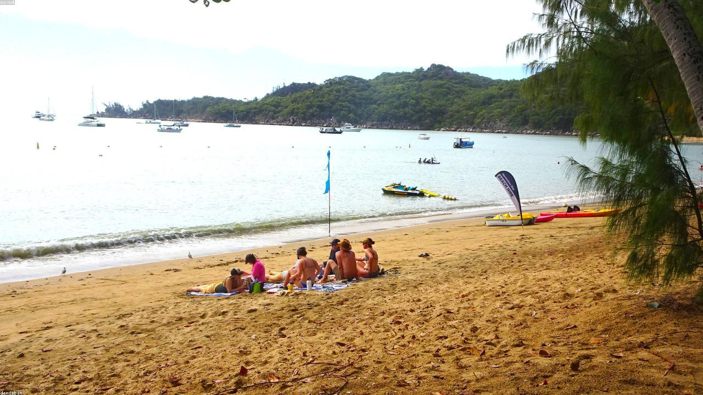
Crystal clear turquoise waters gently washing over pristine white sands. A perfect slice of island paradise.
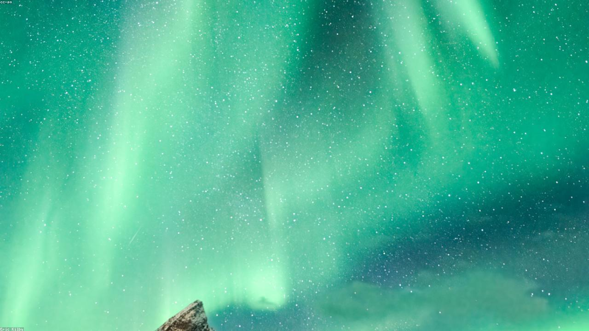
The calm waters of a remote fjord perfectly mirroring the starlit night sky, creating a sense of infinite space.
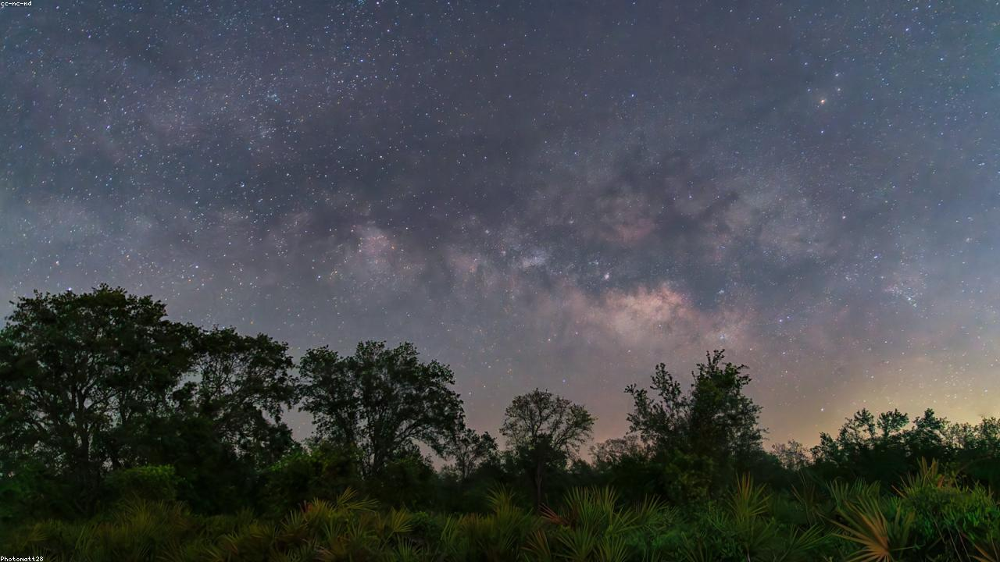
The galactic core shines brilliantly over the barren desert landscape, capturing the majesty of our home galaxy.
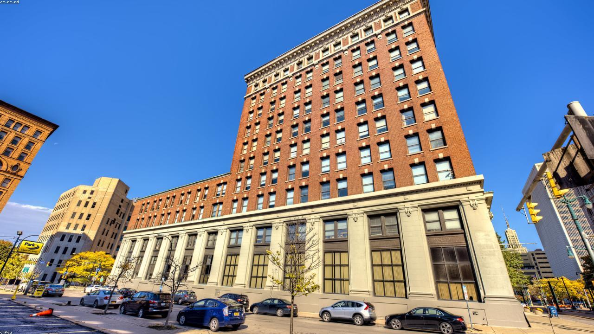
The concrete canyons of Manhattan. Towering skyscrapers reach into the sky, demonstrating the scale of human engineering.
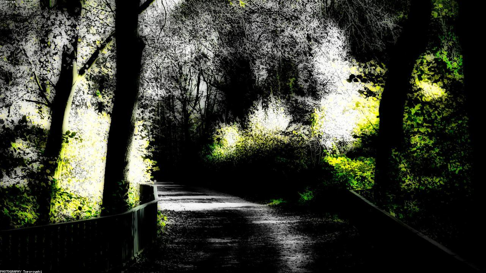
Vibrant red and orange maple leaves stand out sharply against a moody, overcast autumn sky.
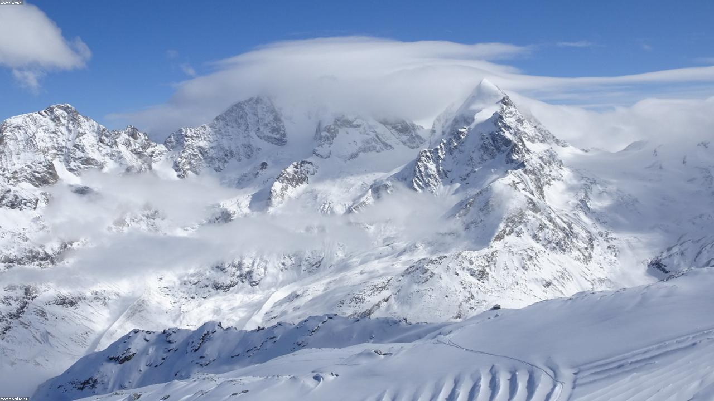
Ancient blue ice formations in a glacial cave, carved by subglacial meltwater over centuries.
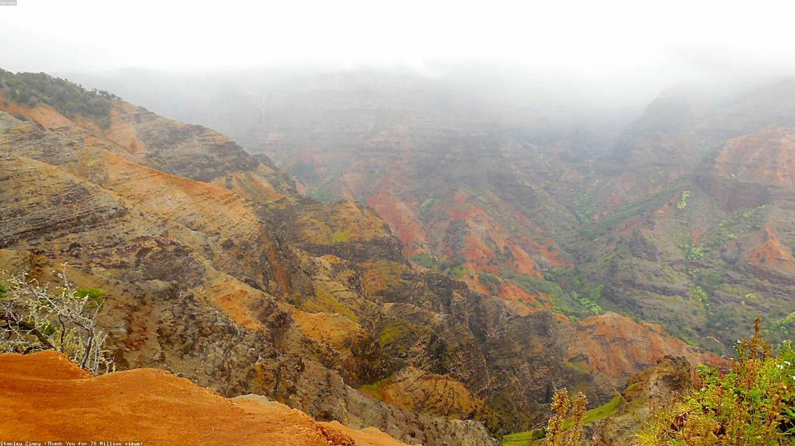
Layers of sedimentary rock expose millions of years of geological history, illuminated by the setting sun.
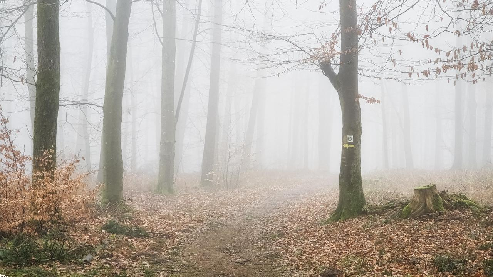
Deep within the Black Forest, a mystic fog rolls through the ancient pines, creating an atmosphere straight out of a fairy tale.
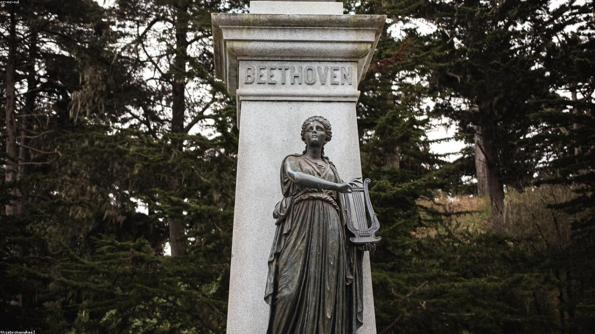
The iconic Golden Gate Bridge emerges from the thick San Francisco fog during the blue hour, its lights cutting through the mist.
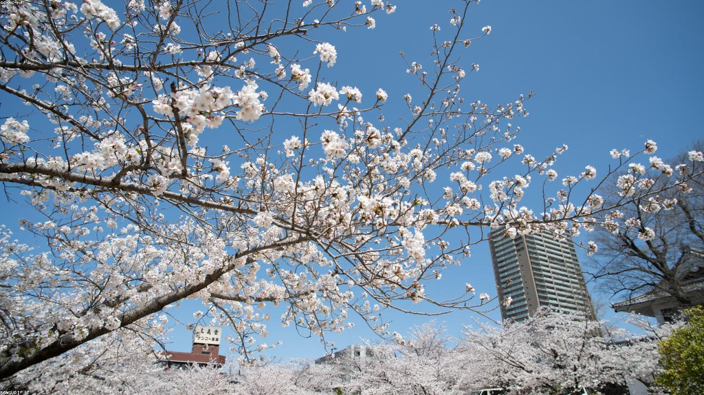
Delicate pink cherry blossoms in full bloom along the Meguro River, signaling the arrival of spring in Tokyo.
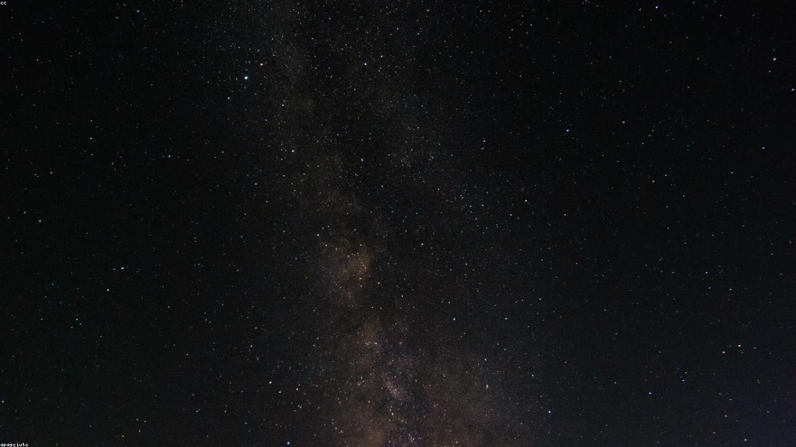
The rugged peaks of the Dolomites piercing into a sky blanketed with millions of stars, showcasing the raw beauty of the Italian Alps at night.
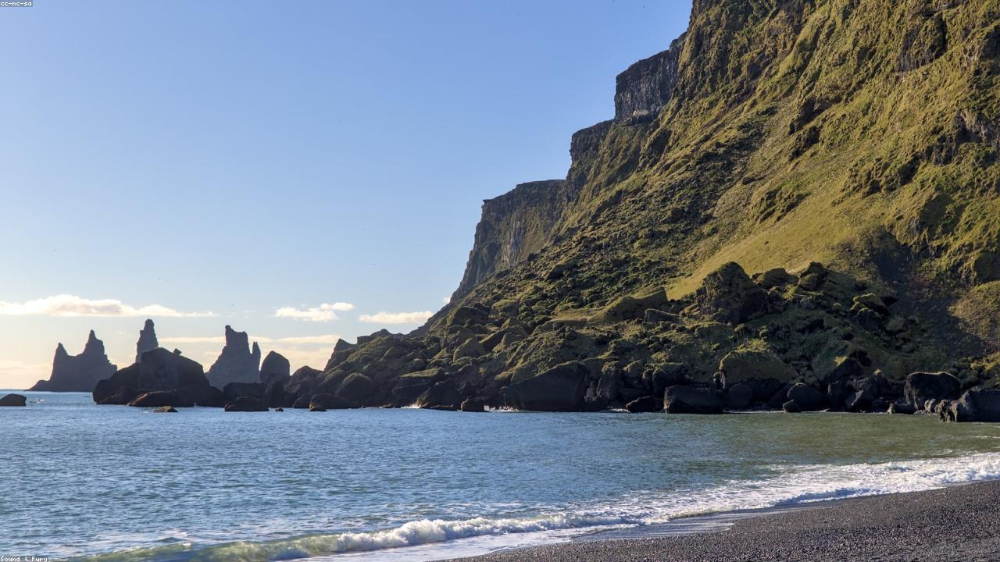
Powerful waves crashing along the pristine shores of the Gold Coast, capturing the dynamic energy of the Pacific Ocean.
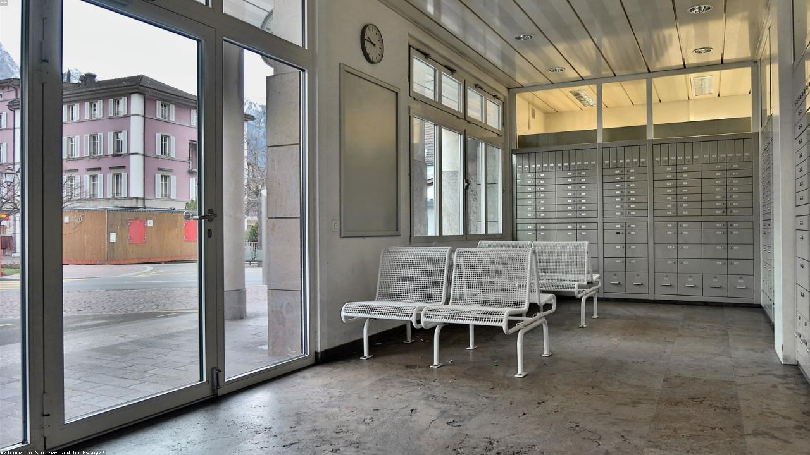
The picturesque village of Zermatt nestled in the valley, with the majestic Matterhorn towering silently in the background.